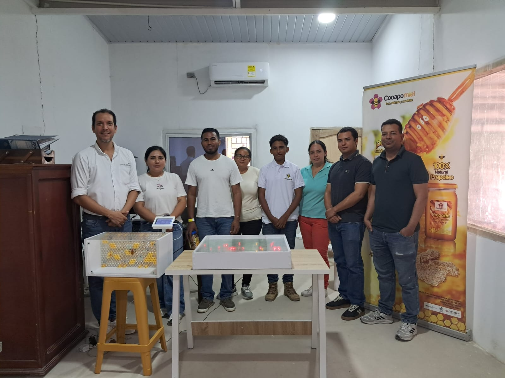
Descripción del Proyecto
Sistema inteligente para el monitoreo, análisis y optimización de la producción de miel en los Montes de María, desarrollado por ONIRIS-ID junto con la cooperativa apícola COOAPOMIEL y financiado por la convocatoria 962 SENAINNOVA 2024 (Minciencias y SENA). Nodos IoT instalados en las colmenas miden temperatura, humedad, vibraciones, CO₂ y peso, y envían los datos a un servidor remoto, donde se procesan con inteligencia artificial y se muestran en una plataforma web. Participo como joven investigador. El proyecto está en ejecución.
Objetivos
- Diseñar e implementar nodos IoT de monitoreo de colmenas con conectividad inalámbrica.
- Procesar y analizar los datos con inteligencia artificial para optimizar la producción.
- Evaluar el sistema en campo para la optimización y certificación de la miel.
- Transferir el conocimiento y la tecnología a COOAPOMIEL y al SENA.
Resultados
- Proyecto aprobado y financiado en la convocatoria 962 SENAINNOVA 2024.
- Nodos con alimentación solar y báscula de celdas de carga instalados en colmenas piloto.
- Prototipos demostrativos: colmena de acrílico con pantalla de monitoreo y mapa LED de apiarios.
Galería

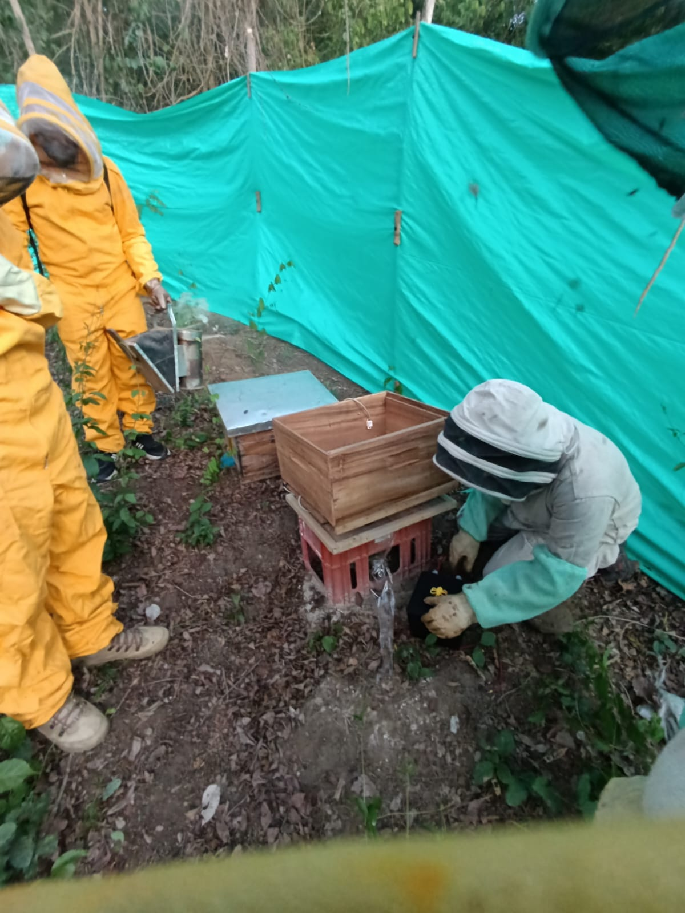
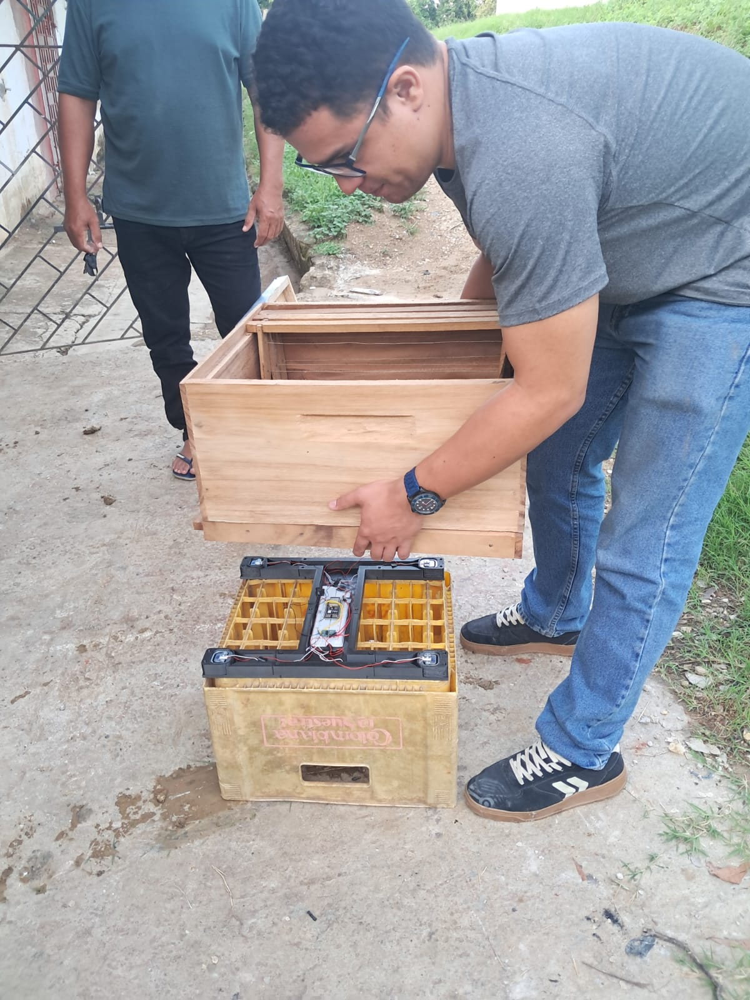
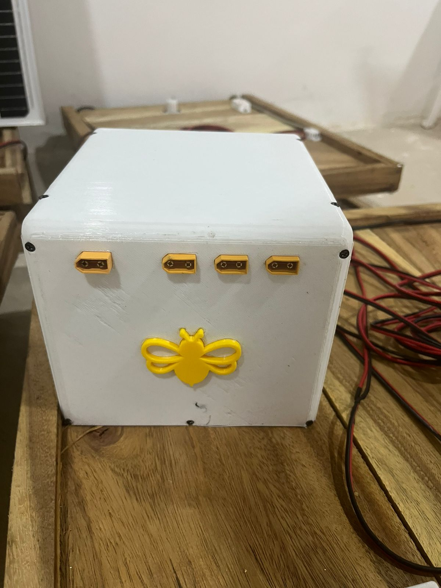
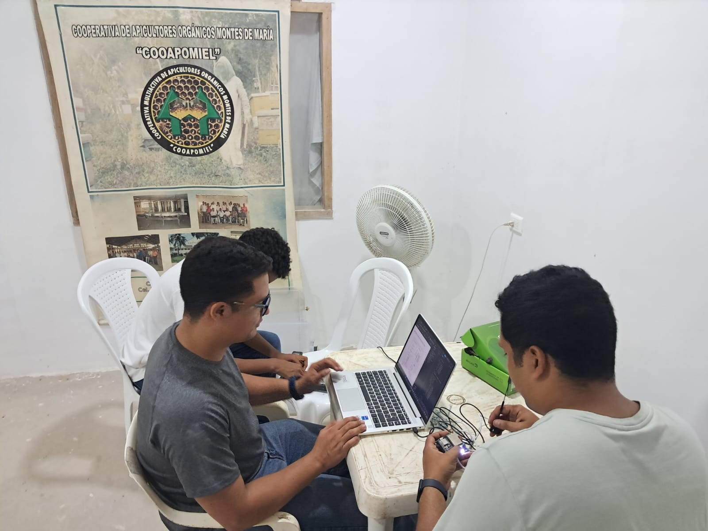
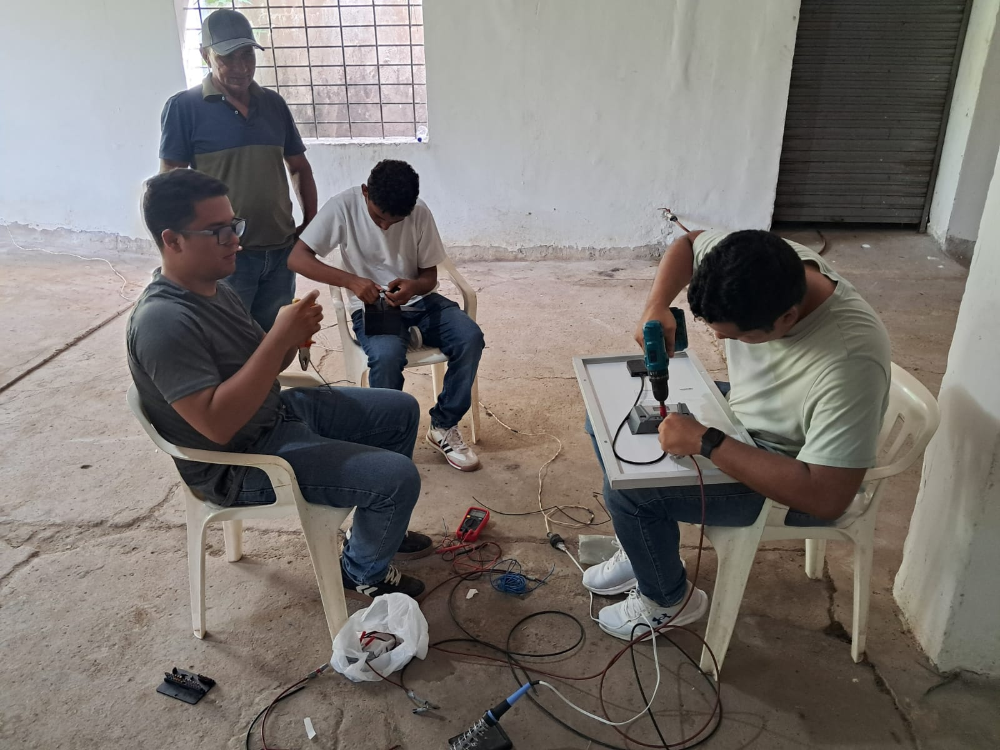
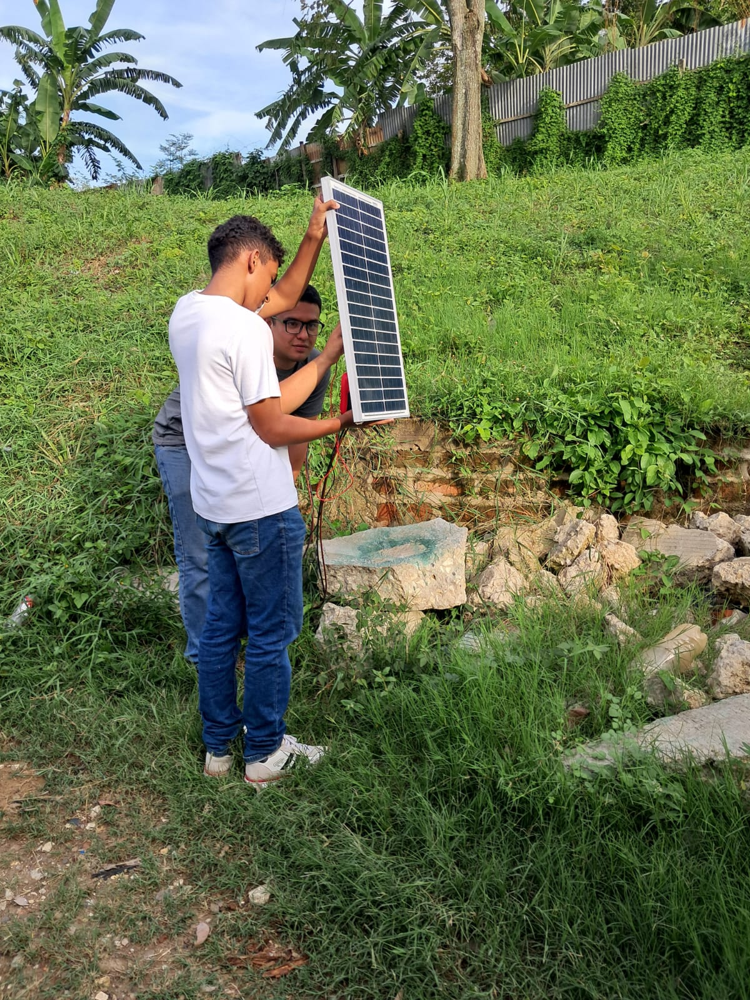
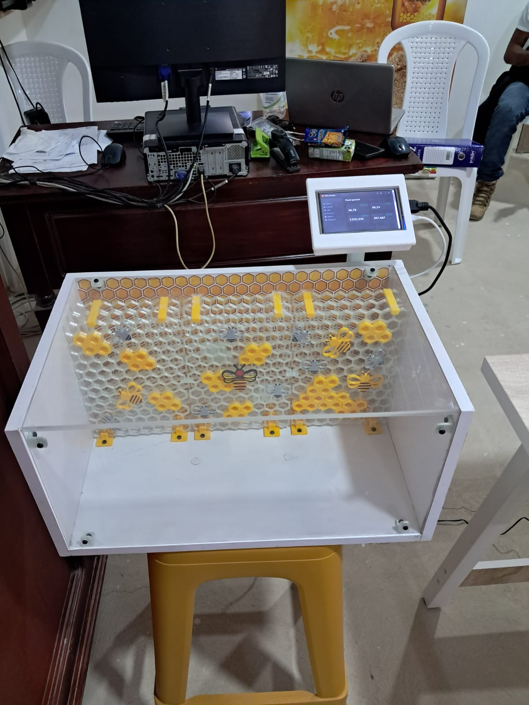
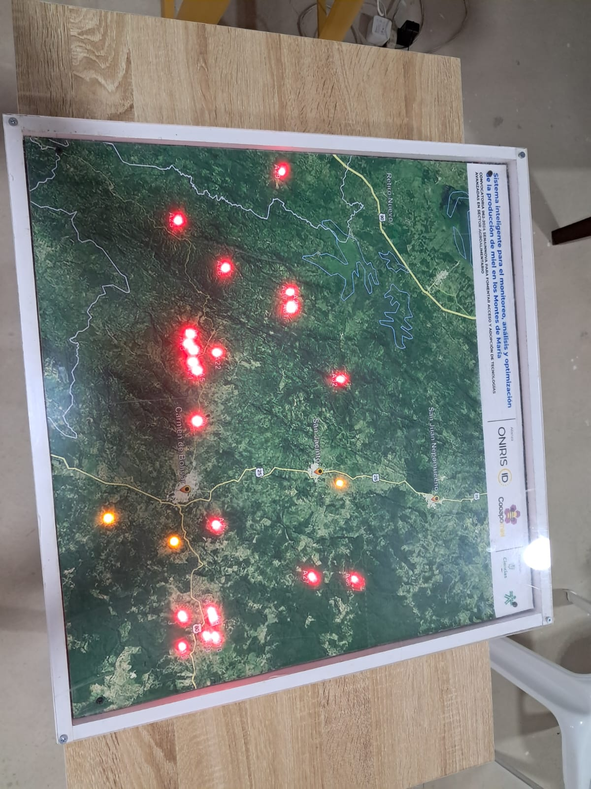
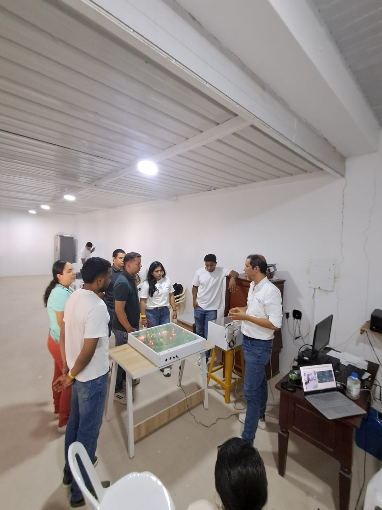
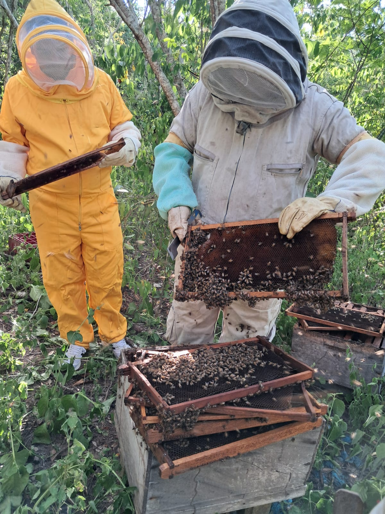
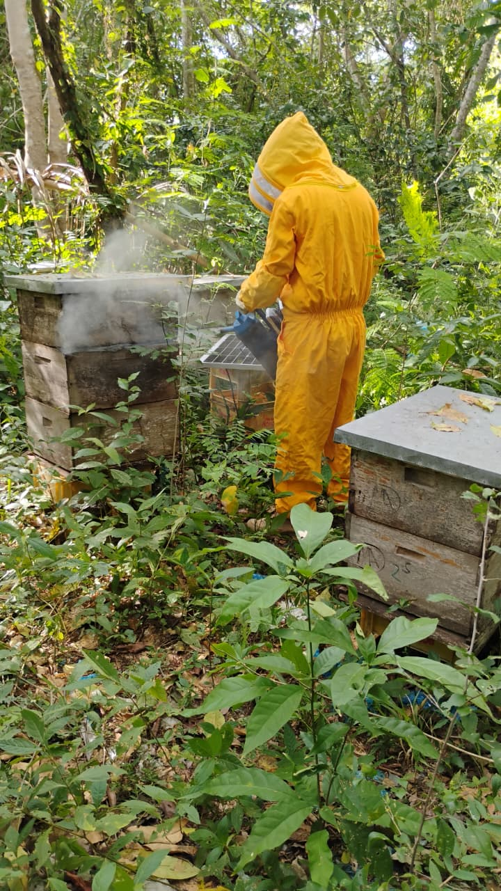